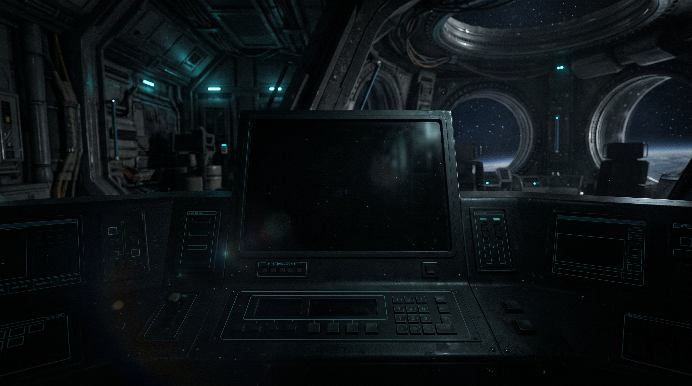
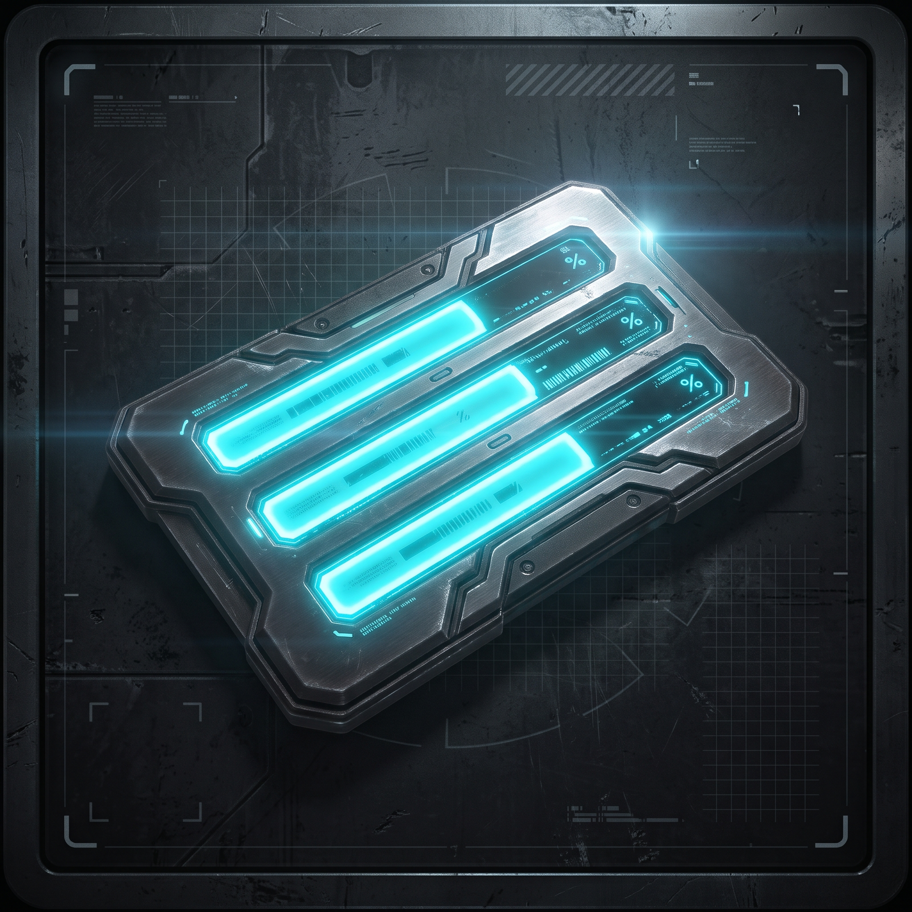

Módulo 3: Comunicações (Sem Energia)

O painel de transmissão está completamente apagado e o encaixe da bateria encontra-se vazio. Sem uma Célula de Energia não há como enviar o sinal de resgate.

Progresso: Etapa 2 de 3
O painel de transmissão está completamente apagado e o encaixe da bateria encontra-se vazio. Sem uma Célula de Energia não há como enviar o sinal de resgate.
Credencial magnética de nível N2 pertencente à equipe de manutenção da Kepler-7. Libera a trava eletrônica da porta da Engenharia.
Fechar